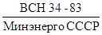
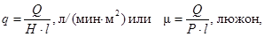
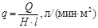
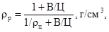
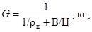
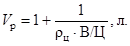
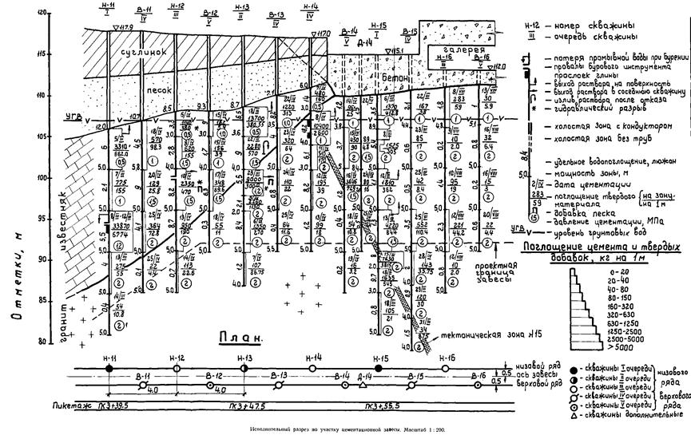

ВЕДОМСТВЕННЫЕ СТРОИТЕЛЬНЫЕ НОРМЫ
ЦЕМЕНТАЦИЯ СКАЛЬНЫХ ОСНОВАНИЙ
ГИДРОТЕХНИЧЕСКИХ СООРУЖЕНИЙ
ВСН 34-83
Минэнерго СССР
Министерство энергетики и электрификации СССР
ЛЕНИНГРАД 1984
РАЗРАБОТАНЫ ВНИИГом им Б.Е. Веденеева Минэнерго СССР (зам. директора по научной работе И.Б. Соколов, проф., доктор техн. наук; руководитель темы А.П. Пак, канд. техн. наук; ответственные исполнители. В.Ф. Демин, канд. техн. наук; Л.Ф. Фурсов; Л.Н. Паронян, канд. техн наук; И.И. Яковлева), институтом «Гидроспецпроект» Минэнерго СССР (главный инженер А.В. Попов; ответственные исполнители зам главного инженера Л.И. Малышев, канд. техн. наук; В.В. Котульский; П.У. Пониматкин), при участии ВО «Гидроспецстрой» Минэнерго СССР (зам. главного инженера В.Б. Хейфец), Гидропроектом им. С.Я. Жука Минэнерго СССР (главный инженер Т.П. Доценко; зам главного инженера И.А. Парабучев; ответственный исполнитель Р.Р. Тиздель).
ВНЕСЕНЫ ВНИИГом им. Б.Е. Веденеева и институтом «Гидроспецпроект».
ПОДГОТОВЛЕНЫ к утверждению Главниипроектом и ВО «Гидроспецстрой» Минэнерго СССР
Исполнители Л.И. Кудояров и М.Н. Розин.
С введением в действие 
ВСН 34-83 согласованы с Госстроем СССР (письмо № ДП-903-1 от 17.02.83 г.).
|
Министерство энергетики и электрификации СССР |
Ведомственные строительные нормы |
ВСН 34-83 |
|
Минэнерго СССР |
||
|
Цементация скальных оснований |
Взамен |
|
|
Минэнерго СССР |
1.1. Настоящие Нормы предъявляют требования к производству цементационных работ в скальных основаниях гидротехнических сооружений:
при устройстве противофильтрационных завес и проведении площадной цементации с целью упрочнения и уменьшения водопроницаемости грунтов;
при проведении укрепительной цементации с целью улучшения деформационных свойств грунтов.
Требования Норм должны соблюдаться как при производстве цементационных работ, так и при проектировании этих работ.
1.2. Требования настоящих Норм предусматривают производство цементационных работ в следующих природных условиях:
грунты основания сооружения скальные или полускальные с пустотами, представленными трещинами;
раскрытие трещин грунтов находится в пределах 0,1 - 10 мм;
удельное водопоглощение грунтов до их цементации более 0,01 л/(мин · м2) (1 люжон) и менее 10 л/(мин · м2) (1000 люжонов); действительная скорость движения подземных вод менее 2400 м/с;
химический состав подземных вод не нарушает процессов схватывания и твердения цемента;
грунты имеют положительную температуру.
Требования к производству цементационных работ, рекомендуемые в особых инженерно-геологических условиях, не соответствующих перечисленным выше, приведены в приложении 2.
1.3. Требования настоящих Норм предусматривают производство цементационных работ с применением наиболее распространенных нестабильных цементных растворов.
Требования к производству цементационных работ с применением стабильных растворов приведены в приложении 3.
1.4. Требования настоящих Норм не распространяются на цементационные работы, выполняемые:
для уплотнения и укрепления кладок искусственных сооружений и цементации швов в этих сооружениях;
для заполнения пустот за обделкой туннелей или других крупных естественных и искусственных пустот.
1.5. При производстве и проектировании цементационных работ рекомендуется применять термины, приведенные в приложении 1.
|
Внесены Всесоюзным ордена Трудового Красного Знамени научно-исследовательским институтом гидротехники им. Б.Е. Веденеева, специализированным проектно-изыскательским и экспериментально-конструкторским институтом «Гидроспецпроект» |
Утверждены |
Срок введения в действие |
2.1. При совместном выполнении цементационных и других строительных работ совмещенный график должен предусматривать обеспечение фронта для цементационных работ, необходимого для соблюдения технологического процесса цементации, предусмотренного настоящими Нормами.
2.2. Цементационные работы, производимые для строящихся сооружений, следует выполнять, как правило, до подъема уровня верхнего бьефа гидротехнического сооружения.
При выполнении цементационных работ после частичного или полного подъема напора на сооружение должны учитываться изменения условий производства работ, вызванные подъемом напора.
2.3. Цементационные работы должны быть закончены до устройства дренажа основания сооружения или должны проводиться мероприятия, учитывающие возможность засорения дренажа цементационными растворами.
2.4. При проектировании цементационных работ в подземных условиях:
подземные помещения (штольни, галереи, потерны, туннели) должны иметь высоту не менее 3,5 м при бурении колонковыми станками и не менее 2,8 м при бурении пневмоударными станками;
цементационные штольни и галереи должны иметь шламоотводные лотки с уклоном 0,01 - 0,03 в сторону шламосборника и быть оборудованы средствами для промывки лотков и транспортировки шлама за пределы подземного помещения.
2.5. Цементация грунтов, как правило, должна выполняться под пригрузкой, создаваемой вышележащими естественными грунтами, телом сооружения или специальной бетонной плитой.
Вес, деформационные свойства, несущая способность и водопроницаемость пригрузочного слоя должны обеспечивать проведение цементации при проектном давлении раствора без нарушения сплошности пригрузочного слоя и без утечки цементного раствора на поверхность или в пригрузочный слой.
2.6. В пределах пригрузочного слоя, сложенного неустойчивыми грунтами, цементационные скважины следует оборудовать трубами с заливкой затрубного пространства цементным раствором.
2.7. При проведении цементации под бетонными и железобетонными сооружениями или под бетонной плитой должно быть обеспечено выполнение следующих требований:
водопроницаемые швы в бетоне должны быть предварительно зацементированы или зачеканены;
в железобетонном пригрузочном слое на месте проектных цементационных скважин должны быть установлены трубы или устроены штрабы;
цементация грунтов допускается по истечении 10 сут после окончания укладки бетона пригрузки.
2.8. При проведении цементации скальных грунтов непосредственно под сооружениями, выполненными из грунтовых материалов, следует, как правило, изолировать сооружение от скального основания путем устройства на поверхности основания бетонной плиты, слоя набрызг-бетона или торкрета.
2.9. Цементация скальных грунтов с поверхности основания сооружения без пригрузки допускается под давлением 0,2 - 0,5 МПа в породах хорошей сохранности и малой трещиноватости при условии предварительного уплотнения с поверхности видимых трещин бетоном или цементным раствором и при положительных результатах опытной цементации.
3.1. Опытно-производственная цементация грунтов должна назначаться в начальной стадии цементационных работ в том случае, если в период изысканий опытные цементационные работы не проводились.
Скважины для проведения опытно-производственной цементации должны быть выделены из числа скважин, намеченных проектом; бурение и цементацию выделенных скважин следует выполнять в первую очередь.
Указания по проведению опытно-производственной цементации приведены в приложении 4.
3.2. По результатам опытно-производственных работ проектной и производственной организациями должны быть уточнены технологические приемы бурения скважин и цементации грунтов, предусмотренные проектом.
3.3. В том случае, если проектом укрепительной цементации грунтов предусмотрен контроль результатов цементации геофизическими методами, должно быть выполнено сплошное или выборочное геофизическое опробование естественных грунтов до начала цементационных работ.
Указания по проведению геофизического опробования скальных грунтов даны в приложении 5.
4.1. Бурение и цементация скважин должны производиться способом последовательного сближения скважин - по очередям.
При выполнении каждой последующей очереди расстояние между скважинами в завесе или площадь основания, укрепляемого от одной скважины, следует уменьшить в два раза.
4.2. При устройстве многорядных завес цементацию скважин следует выполнять последовательно по рядам скважин, первым следует цементировать низовой ряд скважин.
4.3. Расстояние между скважинами первой очереди следует назначать в пределах 6 - 16 м для противофильтрационных завес и 4 - 12 м для площадной цементации. В том случае, если между скважинами I очереди появляется гидравлическая связь, не вызванная гидравлическим разрывом грунтов, расстояние между скважинами I очереди следует увеличить в два раза.
4.4. Конечные расстояния между скважинами и число очередей скважин, предусмотренных проектом, должны уточняться в процессе производства работ после завершения цементации каждой очереди скважин путем проведения проектной организацией анализа результатов цементации по исполнительной документации.
Если проведенный анализ показывает соответствие свойств зацементированных грунтов на каком-либо участке цементационных работ проектным требованиям, то производятся контрольные работы в соответствии с разделом 17 настоящих Норм.
В случае, если результаты анализа исполнительной документации выявят недостаточность выполненных работ, назначаются скважины следующей очереди.
В тех случаях, когда материалы исполнительной документации по законченным двум или более очередям скважин не позволяют достоверно оценить соответствие полученных результатов проектным требованиям, выполняется часть скважин следующей очереди, по анализу результатов которых устанавливается необходимость или продолжения выполнения остальных скважин данной очереди или назначения контрольных работ.
4.5. Дополнительные цементационные скважины после цементации скважин данной очереди должны назначаться в том случае, если среди процементированных скважин будут установлены:
зоны с поглощениями воды и цемента, превышающими в 10 раз средние поглощения для данной очереди скважин;
зоны с неполноценной цементацией, согласно п. 14.23 настоящих Норм;
участки скважин, которые не могли быть пробурены до проектной глубины по производственным обстоятельствам.
Дополнительные скважины в количестве 1 - 2 должны быть пробурены в 0,5 м от проектной скважины, содержащей зоны с неполноценной цементацией, и процементированы на глубину, соответствующую глубине этих зон.
5.1. Скважины глубиной более 7 - 8 м следует цементировать отдельными, последовательно расположенными зонами, имеющими, как правило, длину 5 м.
5.2. В скважинах, имеющих глубину, не кратную 5 м, границы зон следует назначать, размещая зону длиной менее 5 м у устья скважины, а зону длиной более 5 м - у забоя скважины. Остальные зоны в грунтах однородного состава должны иметь длину 5 м.
5.3. В неслоистых скальных грунтах границы зон соседних скважин разных очередей следует размещать на одной прямой линии для параллельных скважин или по концентрическим окружностям для скважин с веерным расположением.
В скважинах, пересекающих слои пород различного состава и трещиноватости, границы зон следует совмещать с границами слоев.
5.4. В неустойчивых грунтах и при пересечении скважиной тектонических зон, участков разрушенных скальных грунтов, карстовых пустот, источников с большим притоком воды длину цементируемой зоны следует уменьшить до 1 - 3 м.
5.5. В том случае, если грунты имеют удельное водопоглощение менее 0,03 л/(мин · м2) (3 люжона), в скважинах второй и последующих очередей допускается применение зон увеличенной длины (10 - 15 м).
5.6. Бурение и цементация скважин должны выполняться способом нисходящих зон.
Применение способа восходящих зон допускается для второй и последующих очередей скважин при положительных результатах опытной цементации этим способом на объекте.
Примечание к п. 5.6. Применительно к восстающим скважинам здесь и далее требования, содержащие слово «нисходящий», отвечают направлению от устья скважины к ее забою, а слово «восходящий» - от забоя скважины к ее устью.
5.7. Если при цементации скважин второй и последующих очередей способом восходящих зон более чем в 10 % зон будут наблюдаться утечки цементного раствора в обход тампона, цементацию скважин следует продолжить способом нисходящих зон.
5.8. При цементации грунтов нисходящими зонами бурение очередной зоны допускается непосредственно вслед за окончанием цементации предшествующей зоны в том случае, если:
соседние скважины предыдущей очереди процементированы на глубину не менее 10 м ниже буримой зоны;
нагнетание раствора по вышележащей зоне доведено до отказа;
грунтовые воды не являются напорными и их уровень не превышает устья скважины.
При наличии напорных вод очистка скважины от цементного камня и бурение следующей зоны допускается только после перерыва, необходимого для схватывания цемента в процементированной зоне.
5.9. При цементации способом восходящих зон скважины данной очереди следует бурить только после завершения цементации и ликвидационного тампонажа соседних скважин предыдущей очереди.
5.10. В скальных грунтах с пустотностью, благоприятной для образования ложных отказов, по требованию проектной организации после цементации скважин отдельными зонами и очистки скважины от цементного камня может быть назначена суммарная цементация скважин.
6.1. Проектная глубина скважин должна уточняться в процессе производства цементационных работ в зависимости от фактического расположения слоя скального грунта, принятого за границу завесы, а также в зависимости от фактической проницаемости грунтов в нижней зоне.
6.2. Скважины совершенной завесы должны быть углублены в водоупорные слои не менее чем на 0,5 - 1 м от фактической кровли водоупорного слоя.
6.3. В том случае, если проектом несовершенной завесы предусмотрено углубление скважин I очереди ниже основной границы завесы в качестве разведочных скважин, после цементации этих скважин на основании рассмотрения исполнительной документации проектной организацией должен быть решен вопрос о необходимости сближения скважин в области, пересеченной разведочными скважинами, и о положении проектной границы завесы.
6.4. При устройстве несовершенной завесы и при отсутствии разведочных скважин, если поглощения воды и цемента в нижней зоне скважин более чем в 10 раз превышают средние поглощения для этой скважины, должна быть пробурена и процементирована еще одна зона ниже проектной границы завесы.
Если в дополнительной зоне будут обнаружены большие поглощения воды и цемента, проектная организация должна рассмотреть вопрос о целесообразности увеличения глубины проектной границы завесы.
7.1. Инструментальное вынесение цементационных скважин в натуру и определение высотного положения устьев скважин должны проводиться, как правило, для каждой второй скважины I очереди, удаленной одна от другой не более чем на 20 м.
7.2. Отклонение фактического положения устья цементационной скважины от его проектного положения в плане не должно превышать 0,1 м.
7.3. Всем проектным скважинам до начала их бурения следует присваивать номера по системе нумерации, указывающей положение скважины по фронту работ, независимо от времени бурения и цементации.
Всем дополнительным скважинам, назначаемым по ходу или при завершении цементационных работ, следует присваивать номера близлежащих проектных скважин с добавлением букв «д» (добавочной очереди), «n» (повторная, вместо аварийной или неполноценной), «к» (контрольная).
8.1. Цементационные скважины следует бурить способами, обеспечивающими промывку скважины водой или продувку ее воздухом, поступление цементного раствора в пустоты грунтов, установку тампона в скважине.
Предпочтение следует отдавать способам бурения, обеспечивающим наименьшие отклонения скважин от проектного направления, ровные стенки скважин, меньшее количество бурового шлама, меньшие диаметры скважин, наименьшую стоимость работ.
8.2. Диаметры цементационных скважин, как правило, следует назначать в пределах 40 - 110 мм.
8.3. В том случае, если при бурении скважины наблюдается поглощение промывочной воды или обрушение стенок скважины, бурение следует остановить и приступить к цементации пробуренной части скважины.
8.4. По окончании бурения скважина должна быть интенсивно промыта водой до полного осветления изливающейся воды или водовоздушной смеси.
При отсутствии излива воды на поверхность промывка скважины должна продолжаться не менее 15 мин.
8.5. По окончании промывки должен быть произведен контрольный промер глубины скважины.
Высота слоя шлама, остающегося после промывки на забое скважины, не должна быть более 0,3 м.
После окончания промывки устье скважины следует плотно закрыть крышкой или пробкой.
8.6. При бурении цементационных скважин глубиной более 20 м должны проводиться мероприятия, предотвращающие отклонение скважины от заданного направления:
установка бурового станка и вращателя по угломеру и жесткое их закрепление в заданном направлении;
забуривание скважин при минимальных давлениях на забой и числе оборотов бурового снаряда;
применение длинных колонковых труб, утяжеленных снарядов, буровых штанг с замковым соединением.
8.7. При глубине скважин более 40 м, как правило, должна проводиться выборочная инструментальная проверка фактического отклонения скважин от заданного направления.
Отклонения цементационных скважин от заданного направления на глубинах 20, 40, 60, 80 и 100 м от устья не должны превышать соответственно 0,4; 0,8; 1,8; 2,8 и 5 м.
В случае превышения указанных отклонений, вызванных природными условиями основания, проектная организация должна определить допустимость дальнейшего производства работ без корректировки проекта.
8.8. В сложных инженерно-геологических условиях по требованию проекта выборочно или систематически должны выполняться следующие дополнительные операции при бурении скважин:
наблюдения за составом проходимых пород и отбор керна из скважины;
наблюдения за поглощением и мутностью промывочной воды;
измерения по скважинам уровня или напора грунтовых вод, расхода изливающейся воды;
кавернометрические измерения и каротаж скважин (электрокаротаж, сейсмокаротаж, расходометрия).
9.1. При цементации нисходящими зонами тампон должен устанавливаться в кровле очередной зоны до глубины, позволяющей применить проектное давление цементации без деформаций вышележащей толщи и гидравлического разрыва грунта и без выхода раствора на поверхность.
Для сокращения затрат труда и цемента на удаление цементного камня из скважины по требованию проекта допускается установка тампона в кровле каждой очередной зоны независимо от ее глубины.
9.2. При цементации нисходящими зонами при установке тампона в кровле очередной зоны тампон следует разжимать на 0,2 - 2 м выше верхней границы цементируемой зоны.
9.3. При цементации восходящими зонами тампон следует разжимать на глубине верхней границы очередной зоны.
9.4. При невозможности разжать тампон и обеспечить его герметичность на заданной глубине из-за местной неустойчивости грунтов тампон следует переместить на 0,5 - 2 м выше по скважине.
9.5. В неустойчивых грунтах, в которых невозможно обеспечить герметичность тампона на проектных глубинах, тампон следует устанавливать в устье скважины (в направляющих трубах, бетоне) или в зоне устойчивых грунтов с соответствующей корректировкой проекта, выполняемой проектной организацией.
Невозможность установки тампона в грунтах должна быть подтверждена актом.
10.1. После установки тампона в скважину и перед нагнетанием цементационного раствора должна быть выполнена проверка исправности и герметичности цементационной системы путем нагнетания воды в скважину.
В случае герметичности системы нагнетание воды в скважину должно быть продолжено с целью гидравлического опробования грунтов.
10.2. Гидравлическое опробование следует производить при наибольших величинах давления и расхода воды, но не превышающих значений, определенных для цементного раствора, согласно п. 14.3 настоящих Норм.
Давление воды после его стабилизации должно поддерживаться неизменным в течение 10 - 15 мин; за это время следует произвести 2 - 3 измерения расхода воды.
10.3. По результатам гидравлического опробования должно быть определено удельное водопоглощение грунтов согласно указаниям, приведенным в приложении 6.
11.1. Для цементации грунтов следует применять портландцемент марки 300 - 500 по ГОСТ 10178-76.
При надлежащем технико-экономическом обосновании допускается применение разновидностей портландцемента: пластифицированного, сульфатостойкого, тампонажного.
Применение шлакопортландцемента, пуццоланового, глиноземного, расширяющегося и гидрофобного цементов допускается только после проведения лабораторных испытаний, устанавливающих схватывание осадка цемента из цементного раствора в конкретных условиях строительства.
11.2. Цемент, осадок которого из цементного раствора с водоцементным отношением В/Ц = 1 при температуре 10 °С имеет срок начала схватывания свыше 48 ч, считать непригодным для цементации.
11.3. При наличии в грунтах агрессивных подземных вод выбор вида цемента для цементации должен производиться в соответствии со СНиП II-28-73* применительно к группе условий: безнапорные сооружения, коэффициент фильтрации менее 0,1 м/сут, при особой плотности бетона, если проектом не обоснованы другие требования к цементу.
11.4. При приготовлении цементного раствора не разрешается смешивать цементы различных видов и марок.
11.5. При транспортировке, приемке, складировании и хранении цемента, применяемого для цементационных работ, должны соблюдаться технические правила ТП 101-81.
11.6. Вода для приготовления цементного раствора должна удовлетворять требованиям ГОСТ 23732-79.
11.7. Температура воды при затворении цемента не должна превышать 45 °С.
11.8. Для замены части цемента в цементационном растворе с целью снижения стоимости материалов и повышения производительности труда следует использовать перечисленные ниже добавки к цементу:
песок с размером зерен не более 0,5 - 1 мм, применяемый в количестве до 200 % от веса цемента при заполнении отдельных крупных трещин и пустот, характеризующихся поглощением материала более 500 - 1000 кг на 1 м скважины;
пылеватые материалы: золу-унос, каменную муку, лесс с размером зерен менее 0,1 - 0,15 мм, применяемые в количестве до 100 - 150 % от веса цемента при цементации водопроницаемых и сильноводопроницаемых скальных грунтов;
суглинки и пылеватые глины, придающие растворам стабильность, применяемые в количестве до 200 %, преимущественно для заполнения крупнотрещиноватых и закарстованных скальных грунтов;
тонкодисперсные глины и бентонит в количестве, определяемом в зависимости от активности глины и бентонита, при уплотнении мелкотрещиноватых, пористых и мелкокавернозных пород.
Требования, относящиеся к применению золы-уноса в цементных растворах, рассмотрены в приложении 8.
Требования, относящиеся к применению глинистых материалов и стабильных растворов, получаемых при добавке глинистых материалов, даны в приложении 3.
11.9. Для регулирования реологических свойств цементных растворов в их состав следует вводить:
бентонит в количестве от 0,5 до 5 % от веса цемента (в зависимости от активности бентонита) для уменьшения расслаиваемости и повышения однородности растворов, улучшения проникаемости растворов в пустоты, уменьшения износа оборудования;
жидкое стекло, хлористый кальций, поташ (в виде водных растворов) для загустевания и ускорения схватывания цементных растворов;
сульфитно-дрожжевую бражку (СДБ) и другие поверхностно-активные вещества для уменьшения структурообразования в цементном растворе и повышения подвижности и проникаемости растворов в пустоты.
Допустимые количества добавок приведены в приложении 9. Количество добавки к цементному раствору устанавливается лабораторными исследованиями.
12.1. Состав цементного раствора следует выражать водоцементным отношением (В/Ц).
При цементации следует применять шкалы составов цементных растворов, приведенные в приложении 10.
12.2. Дозирование материалов, предназначенных для цементных растворов, должно производиться с точностью до 3 % для воды и цемента и до 5 % для добавок к цементу.
12.3. Приготовление цементного раствора требуемого состава следует производить на рабочем растворном узле путем разбавления густого (маточного) раствора, имеющего В/Ц = 0,6 ÷ 0,8 и заготовленного на центральном растворном узле, или путем смешения сухих материалов с водой.
12.4. Перемешивание цемента, воды и добавок должно продолжаться до получения однородной массы.
12.5. Проверку составов приготовленного раствора следует производить выборочно ареометром.
12.6. По требованию проекта для придания цементному раствору особых свойств - повышения стабильности и проникающей способности - должны применяться:
предварительный сухой домол или сепарация цемента;
химическая обработка раствора поверхностно-активными добавками;
механическое диспергирование цемента в растворе при помощи диспергаторов.
Способы обработки цемента и раствора, воды, добавок и тип диспергатора должны быть указаны в проекте. Количество добавок и время диспергирования раствора следует определять по результатам лабораторных испытаний.
12.7. Приготовленный цементный раствор должен непрерывно перемешиваться или находиться в движении до момента его поступления в скважину.
12.8. Цементный раствор должен быть использован в течение не более четырех часов с момента его приготовления.
13.1. Для нагнетания цементного раствора должны использоваться цементационные поршневые и плунжерные насосы.
Рекомендуется использовать насосы с регулируемым приводом.
При использовании насосов с нерегулируемым приводом раствороводы должны оборудоваться регуляторами, обеспечивающими плавное изменение подачи раствора.
13.2. Растворовод, подающий цементный раствор от насоса к скважине, в зависимости от способа нагнетания раствора, принятого в соответствии с п. 14.1 настоящих Норм, должен состоять:
из одного нагнетательного растворовода;
из одного нагнетательного растворовода с отводом, направленным к расходной емкости, на котором устанавливается регулятор расхода;
из двух раствороводов: прямого и возвратного, проложенных от насоса до цементируемой скважины, с регулятором расхода на возвратном раствороводе.
Растворовод должен иметь внутренний диаметр в пределах от 19 до 38 мм.
Растворовод должен быть снабжен краном для спуска воздуха, воды или раствора, установленным около скважины.
13.3. Манометры для измерения давления раствора следует устанавливать в двух точках цементационной системы: у насоса и устья скважины.
Манометры должны быть снабжены предохранителями, препятствующими поступлению раствора в трубку манометра.
13.4. Цементационные установки должны быть снабжены приспособлениями и аппаратурой для измерения расхода нагнетаемого раствора, обеспечивающими фиксацию расхода раствора:
не реже 1 раза в 1 мин при автоматических измерениях и записи расхода раствора;
не реже 1 раза в 5 мин при измерении расхода по объему израсходованного раствора и при журнальной записи результатов измерения.
13.5. Для проведения цементации при расходе и давлении раствора, близких к предельно допустимым, необходимо:
установить реперы и марки на поверхность рабочей площадки или на рядом расположенном сооружении;
проводить наблюдения во время цементационных работ за смещением реперов.
При отсутствии специальных указаний в проекте наибольшим допустимым смещением репера в период цементации одной зоны следует считать 1 мм.
14.1. При использовании насосов с регулируемым приводом нагнетание раствора следует производить нажимным способом.
При использовании насосов с нерегулируемым приводом нагнетание раствора следует производить полунажимным способом с возвратом избытка раствора в пределах цементационной установки.
Циркуляционный способ нагнетания раствора с циркуляцией раствора от насоса до устья скважины и обратно следует применять, как правило, при размещении растворовода на дневной поверхности при отрицательной температуре среды, окружающей растворовод.
14.2. Нагнетание цементного раствора в скважину следует начинать непосредственно после гидравлического опробования не прерывая нагнетания воды.
14.3. За весь период нагнетания раствора в зону скважин расход и давление раствора должны быть наибольшими, но они не должны превышать допустимые значения расхода раствора и давления отказа, установленные проектом и откорректированные проектной организацией в процессе производства работ, согласно требованиям п. 14.4 настоящих Норм.
Ориентировочные допустимые значения расхода и давления цементационного раствора следует определять согласно указаниям, приведенным в приложении 10.
14.4. Корректировка допустимых значений расхода и давления раствора, предусмотренных проектом, должна производиться по результатам рассмотрения хода изменения расхода и давления раствора при цементации зон.
При обнаружении гидравлических разрывов грунта или утечек нагнетаемого раствора на поверхность расход и давление раствора должны быть снижены до значений, исключающих указанные явления.
В сильнодеформируемых грунтах по требованию проектной организации для уточнения допустимых значений расхода и давления раствора при его нагнетании по выборочным зонам должны выполняться:
многоступенчатое гидравлическое опробование по выборочным зонам согласно указаниям, приведенным в приложении 7;
установка реперов и наблюдения за деформациями поверхности основания при нагнетании раствора.
14.5. Начатое нагнетание раствора должно продолжаться непрерывно до наступления отказа или до перерыва нагнетания в случаях, предусмотренных п. 14.12 настоящих Норм.
14.6. При отсутствии особых требований в проекте за отказ в поглощении раствора следует принимать снижение расхода раствора до 5 л/мин при проектном давлении отказа.
При повышенных проектных требованиях к плотности зацементированных грунтов расход раствора при отказе не следует принимать ниже минимального допустимого расхода, приведенного в приложении 10.
14.7. Начальный состав нагнетаемого раствора должен быть В/Ц = 8 ÷ 10.
14.8. Состав нагнетаемого раствора не должен меняться, если при непрерывном нагнетании расход раствора при постоянном давлении уменьшается или давление раствора при постоянном его расходе возрастает.
14.9. Раствор должен сгущаться в тех случаях, когда при нагнетании раствора с максимальным достигнутым расходом давление не повышается или при достижении давления отказа расход раствора не уменьшается.
Сгущение раствора должно производиться:
на одну ступень по шкале составов раствора, приведенных в приложении 11, через каждые 15 мин, если расход раствора менее 60 л/мин.
на одну-две ступени по шкале составов раствора, приведенных в приложении 11, после ввода в зону 1000 - 1500 л раствора, если расход раствора более 60 л/мин.
14.10. Если в результате сгущения раствора его расход уменьшился до 10 - 20 л/мин и продолжает уменьшаться, следует, как правило, произвести разжижение раствора до состава В/Ц = 4 ÷ 10 и этим составом раствора довести нагнетание до отказа.
14.11. Нормальным следует считать ход нагнетания раствора, при котором:
нагнетание ведется непрерывно;
при нагнетании раствора постепенно снижается расход раствора, а давление раствора или соответствует давлению отказа или постепенно возрастает до давления отказа;
весь нагнетаемый раствор поступает в грунт.
К отклонениям от нормального хода нагнетания раствора следует относить:
длительное поглощение наиболее густого цементного раствора без повышения давления;
выход раствора на дневную поверхность непосредственно или через устья соседних скважин;
гидравлический разрыв пород;
перерыв нагнетания раствора, вызванный неисправной работой оборудования.
К отклонениям следует также относить изливы цементного раствора на поверхность через устье скважины при окончании цементации или при перерыве.
При возникновении отклонений от нормального хода нагнетания раствора необходимо соблюдать требования, содержащиеся в п. 14.12 - 14.23 настоящих Норм.
14.12. В том случае, если при отсутствии гидравлического разрыва грунтов или выхода раствора на поверхность расход раствора наиболее густого состава В/Ц = 0,6 не снижается, нагнетание раствора следует продолжить до введения в зону 2000 кг твердого материала на 1 м длины скважины, после чего сделать перерыв.
14.13. Продолжительность назначенного перерыва нагнетания раствора следует устанавливать в зависимости от сроков схватывания нагнетаемого раствора в температурных условиях цементируемой среды.
При отсутствии специальных исследований продолжительность перерыва при использовании цементного раствора с портландцементом следует принимать не менее:
24 ч - при температуре среды выше +10 °С;
48 - 72 ч - при температуре среды в пределах +2 ÷ 10 °С.
14.14. Повторное нагнетание раствора в зону, в которой при предыдущем нагнетании раствора не был получен отказ, должно производиться после разбуривания цементного камня, образовавшегося в скважине при предыдущем нагнетании раствора, и проведении гидроопробования.
14.15. Если после перерыва нагнетания раствора удельное водопоглощение в зоне будет менее 0,2 - 0,5 л/(мин · м2) (20 - 50 люжонов), дальнейшую цементацию зоны следует продолжить цементными растворами.
Если после перерыва удельное водопоглощение в зоне будет более 0,2 - 0,5 л/(мин · м2) (20 - 50 люжонов), то дальнейшую цементацию зоны следует, как правило, продолжить растворами с добавками к цементу (п. 11.8).
14.16. При выходе раствора через устье цементируемой скважины в обход тампона необходимо приостановить нагнетание раствора, переставить тампон на 0,5 - 2,0 м выше по стволу скважины и возобновить цементацию.
14.17. При выходе раствора из устьев соседних цементационных скважин следует снизить на 30 - 50 % расход нагнетаемого раствора, заглушить изливающиеся скважины путем установки в них тампона, после чего продолжить нагнетание раствора при ранее применявшемся давлении.
14.18. При выходе раствора на дневную поверхность следует снизить на 30 - 50 % расход нагнетаемого раствора и затампонировать снаружи места утечки.
При невозможности заделки мест выхода раствора следует прервать нагнетание раствора на 2 - 4 ч, после чего возобновить цементацию.
Если после перерыва утечка раствора возобновляется, следует применить ускорители схватывания, пенообразующие добавки или быстросхватывающиеся смеси.
14.19. При обнаружении гидравлического разрыва пород, не сопровождающегося выходом раствора на поверхность, расход раствора следует уменьшить вдвое и продолжить нагнетание раствора до отказа при давлении вдвое ниже проектного.
14.20. При перерыве нагнетания раствора, связанном с неисправностью оборудования, необходимо всю цементационную систему промыть водой или продуть воздухом не позже чем через 10 - 15 мин после начала перерыва.
14.21. Если после окончания нагнетания раствора он начнет изливаться на поверхность через устье скважины, необходимо перекрыть кран тампона и оставить тампон в скважине не менее чем на 24 ч (до схватывания цемента).
14.22. В породах, содержащих подземные воды с пьезометрическим напором на 3 м и более превышающим устье скважины, нагнетание раствора должно производиться с соблюдением следующих требований:
тампон должен быть снабжен обратным клапаном;
давление раствора должно быть выше противодавления напорных подземных вод;
по окончании нагнетания раствора тампон сохраняется в скважине не менее чем на 24 ч.
14.23. В тех случаях, когда нагнетание раствора в зону не было доведено до отказа, цементация зоны должна быть признана неполноценной; предусмотренная в этих случаях цементация через дополнительные скважины, по п. 4.5 настоящих Норм, должна быть согласована с проектной организацией.
15.1. После завершения цементации всех зон и проведения суммарной цементации скважин, если она была предусмотрена проектом, ствол скважины должен быть плотно затампонирован раствором.
15.2. Тампонаж нисходящих скважин следует выполнять путем заливки раствора в скважину через трубу, опущенную до забоя и постепенно поднимаемую по мере заполнения ствола раствором.
15.3. Тампонаж восстающих скважин следует выполнять путем нагнетания в скважину густого стабильного раствора через тампон с обратным клапаном с опрессовкой при проектном давлении в течение 5 мин. Тампон сохраняется в скважине до начала схватывания раствора.
16.1. Операции, входящие в процесс цементации зоны - бурение скважин, установка тампона, гидравлическое опробование, нагнетание раствора, ликвидационный тампонаж скважин - должны сопровождаться ведением первичной технической документации, в которой отражаются условия проведения операций, их ход и результаты.
16.2. Первичными документами цементационных работ следует считать буровой журнал, журнал цементации, акт испытания контрольной скважины.
На основе первичной документации должны составляться отчетные исполнительные документы - технические отчеты и исполнительные чертежи (разрезы), - которые сжато представляют результаты выполненных работ.
Указания по составлению первичной и отчетной документации цементационных работ и формы документации приведены в приложении 12.
17.1. Контроль качества и оценка достаточности цементационных работ, относящихся к скрытым работам, должны проводиться систематически на всех этапах производства.
17.2. Контроль цементационных работ должен осуществляться в виде:
входного контроля поступающих материалов для цементационных работ, состоящего в проверке соответствия их стандартам, техническим условиям, паспортам и другим документам, подтверждающим качество; в проверке соблюдения требований их разгрузки и хранения; при необходимости в испытании материалов в лаборатории;
операционного контроля за процессом производства работ, за их соответствием проекту, объектным техническим условиям и настоящим Нормам; в операционный контроль включаются контрольные работы по определению результатов выполненной цементации и оценки ее достаточности после завершения всего проектного объема работ или какого-либо этапа работ; контрольные работы выполняются в соответствии с п. 17.4 - 17.18 настоящих Норм;
приемочного контроля с составлением акта освидетельствования скрытых работ, выполняемых в соответствии с п. 17.19 - 17.21 настоящих Норм.
17.3. Для обеспечения полноты, точности и своевременности операционного контроля рекомендуется применять автоматизированные системы сбора и обработки информации о процессе цементации.
17.4. В результате контрольных работ, выполняемых после завершения всего или части проектного объема цементационных работ, должна быть установлена водопроницаемость зацементированных грунтов.
Водопроницаемость грунтов следует выражать значениями удельного водопоглощения, установленными при гидравлическом опробовании контрольных скважин зонами длиной 5 м.
17.5. Контрольные работы должны заключаться:
в анализе результатов работ по использованной документации;
в определении водопроницаемости пород путем гидравлического опробования и цементации контрольных скважин.
17.6. В результате рассмотрения исполнительной документации должны быть установлены:
зоны скважины и участки завесы или площадной цементации, требующие проведения дополнительных работ вследствие большой проницаемости пород или недостаточности проведенной цементации;
места завесы или площадной цементации, по которым следует ожидать наибольшую водопроницаемость зацементированных пород и в которых следует назначить контрольные скважины.
17.7. Контрольные скважины для оценки достаточности выполненных работ бурятся, опробуются и цементируются после цементации дополнительных скважин, выполненных согласно требованиям п. 4.5 настоящих Норм.
17.8. Длина контрольных скважин и ресурсы для их выполнения должны быть определены в проекте; как правило, длина контрольных скважин должна составлять 5 - 10 % от длины рабочих скважин; она должна быть уточнена по результатам анализа исполнительной документации.
17.9. Контрольные скважины следует располагать при однорядной завесе между рабочими скважинами, при двухрядной и многорядной завесах - между рядами скважин.
Если контрольные скважины назначаются для проверки достаточности данной очереди скважин, их следует совмещать с проектными рабочими цементационными скважинами следующей очереди.
17.10. Контрольные скважины бурятся, подвергаются гидравлическому опробованию и цементации по способу нисходящих зон по зонам длиной 5 м. Границы зон контрольных скважин, как правило, должны соответствовать границам зон рабочих скважин.
17.11. Гидравлическое опробование и цементация контрольных скважин производятся при давлении на 20 - 30 % меньше давления отказа, предусмотренного для рабочих скважин.
В остальном технологические режимы при гидравлическом опробовании и нагнетании растворов по контрольным скважинам должны соответствовать режимам, предусмотренным для рабочих скважин.
17.12. В том случае, если водопроницаемость зацементированных грунтов по оси завесы по результатам опробования контрольных скважин окажется выше водопроницаемости грунтов завесы, заданной проектом, проектная организация должна провести анализ исполнительной документации выполненных цементационных работ, на основании которого должна быть установлена практически достигнутая проницаемость зацементированных грунтов. По полученным значениям достигнутой проницаемости проектные требования к водопроницаемости завесы должны быть подтверждены или откорректированы.
17.13. Цементационные работы на участке завесы должны быть признаны достаточными, если удельные водопоглощения в контрольных скважинах по своей средней величине и допускаемым отклонениям от средней величины соответствуют требованиям проекта или достигнутым значениям удельного водопоглощения для грунтов рассматриваемого участка.
Выполненные цементационные работы должны быть также признаны достаточными в том случае, если по данным натурных наблюдений за фильтрацией результаты цементационных работ удовлетворяют требованиям проекта.
17.14. Способ контрольных работ для укрепительной цементации должен быть установлен проектом.
В зависимости от проектного решения контрольные работы должны состоять в определении водопроницаемости грунтов путем гидравлического опробования скважин, или в определении деформационных свойств грунтов геофизическими методами, или оба способа контроля должны применяться одновременно.
Контрольные работы по определению водопроницаемости зацементированных грунтов должны выполняться в соответствии с требованиями п. 17.4 - 17.13 настоящих Норм.
Контрольные геофизические работы следует выполнять путем скважинного сейсмоакустического просвечивания согласно указаниям приложения 5 настоящих Норм, если проектом не предусмотрен иной метод геофизического контроля.
17.15. В зависимости от количества очередей скважин, назначенных при укрепительной цементации, геофизические контрольные работы следует проводить дважды:
после выполнения первых двух или трех очередей скважин;
после выполнения всех проектных очередей скважин.
В том случае, если в результате контрольных работ, проведенных после выполнения первых двух или трех очередей скважин, установлено соответствие свойств зацементированных пород проектным требованиям, то остальные очереди скважин не назначаются.
17.16. Размещение и последовательность опробования контрольных геофизических скважин, методы опробования и необходимые ресурсы для проведения контроля должны быть определены проектом.
17.17. Цементационные работы по укрепительной цементации следует считать достаточными, если в результате контрольных работ установлено соответствие физико-механических свойств зацементированных грунтов проектным требованиям.
17.18. В том случае, если по результатам контрольных работ физико-механические свойства грунтов, требуемые проектом, останутся недостигнутыми, проектная организация должна установить причины недостаточности результатов и определить необходимость и целесообразность дополнительных цементационных работ для обеспечения проектных требований.
17.19. Контроль качества и достаточности законченных цементационных работ производится комиссией в составе представителей строительных организаций, заказчика (дирекции строительства) и проектных организаций.
17.20. Организация, выполняющая цементационные работы, должна представить комиссии:
исполнительные чертежи по законченному участку работ;
первичную документацию (буровые журналы, журналы цементации или ленты автоматической записи параметров процесса цементации);
результаты определения характеристик цемента и других использованных при цементации основных материалов,
документацию по контрольным работам;
заключение проектной организации о результатах анализа исполнительной документации по производственным и контрольным работам и о достаточности выполненных работ.
17.21. По результатам рассмотрения представленной документации комиссия составляет акт освидетельствования скрытых работ согласно приложению 12Е настоящих Норм.
18.1. Зимние условия работ следует определять по устойчивой среднесуточной температуре наружного воздуха ниже +5 °С.
18.2. Цементируемые породы в пределах зоны распространения цементного раствора должны иметь температуру не менее +2 °С.
18.3. При температуре ниже +2 °С породы должны быть отогреты горячим воздухом, паром, теплой водой или электрическим током через цементационные или специально пробуренные для отогрева скважины, назначаемые по особому проекту.
18.4. Работы в зимний период, как правило, должны производиться в тепляках, внутри которых температура должна быть не менее +5 °С.
18.5. Температура нагнетаемого в скважину раствора не должна быть ниже +5° С.
Для обеспечения этого условия следует производить нагревание воды, предназначенной для цементного раствора, и при необходимости нагревание инертных добавок.
18.6. Растворовод, проложенный на открытой поверхности, должен быть утеплен:
при температуре наружного воздуха до минус 15 °С путем устройства коробов с заполнением их опилками или стекловатой;
при температуре наружного воздуха ниже минус 15 °С путем дополнительного устройства - обогревающего трубопровода с циркулирующей горячей водой.
18.7. При работах в зимний период должны производиться систематические измерения температуры нагнетаемого раствора, наружного воздуха, воздуха в помещениях. Результаты измерений заносятся в журнал цементации.
19.1. При производстве работ должны выполняться правила техники безопасности и охраны труда, изложенные в СНиП III-4-80 и в следующих правилах:
Правила безопасности при строительстве подземных гидротехнических сооружений, утвержденные Госгортехнадзором СССР и Минэнерго СССР;
Правила технической эксплуатации электроустановок потребителей и Правила техники безопасности при эксплуатации электроустановок потребителей, утвержденные Госэнергонадзором СССР;
Правила устройства и безопасной эксплуатации сосудов, работающих под давлением, утвержденные Госгортехнадзором СССР;
Правила пожарной безопасности при производстве строительно-монтажных работ, утвержденные Главным управлением пожарной охраны МВД СССР.
Правила устройства и безопасной эксплуатации грузоподъемных кранов, утвержденные Госгортехнадзором СССР.
19.2. Цементационные установки и растворные узлы, располагаемые на дневной поверхности, должны быть закрыты от ветра и дождя, а при работе в зимнее время помещения, где размещаются механизмы, должны быть утеплены и отапливаться.
19.3. Хранение в помещении цементационных установок и растворимых узлов горюче-смазочных воспламеняющихся и вредных химических веществ запрещается.
19.4. Все открытые и движущиеся части цементационных механизмов и машин должны быть снабжены ограждениями, исключающими возможность попадания в механизмы и машины посторонних предметов и травмирования людей.
19.5. Электродвигатели и пусковая аппаратура буровых и цементационных машин должны быть защищены от попадания на них воды и раствора.
19.6. После окончания монтажа все трубопроводы для цементного раствора и воды, работающие под давлением, должны быть испытаны при давлении, в 1,5 раза превышающем максимальное рабочее давление.
19.7. Наладка, смазка и ремонт буровых и цементационных механизмов без их остановки запрещается.
19.8. Пуск цементационных насосов должен производиться при полностью открытом кране растворовода.
19.9. Соединения напорных рукавов должны производиться с использованием быстроразъемных элементов.
19.10. При нагнетании раствора необходимо следить за стабильностью положения тампона, при обнаружении выдавливания тампона из скважины нагнетание должно быть приостановлено и тампон закреплен.
19.11. Замеры мерной рейкой количества раствора в смесителях следует производить только после полной остановки смесителя.
19.12. Разработка магистралей, насосов, установка тампона должна производиться только после полного снятия давления в системе.
19.13. В нерабочее время все механизмы и оборудование цементационных работ должны находиться в положении, исключающем возможность пуска механизмов посторонними лицами.
(рекомендуемое)
|
Термин |
Определение |
|
Цементация грунтов |
Комплекс технологических приемов, используемых при введении в грунты цементационных растворов для заполнения пустот |
|
Цементационный раствор |
Смесь цемента и воды с инертными и химическими добавками |
|
Цементный раствор |
Цементно-водная суспензия |
|
Неустойчивые грунты |
Грунты, при бурении которых стенки скважин обрушиваются или заплывают |
|
Нисходящая скважина |
Скважина, у которой забой ниже устья |
|
Восстающая скважина |
Скважина, у которой забой выше устья |
|
Способ последовательного сближения скважин |
Цементация скважин с последовательным уменьшением расстояний между ними |
|
Очередь скважин |
Группа скважин, цементируемая по какому-либо одному этапу цементационных работ, характеризующемуся одинаковым расстоянием между скважинами |
|
Зона скважины |
Интервал скважины вдоль ее оси, изолированный от остальных частей скважины |
|
Зональная цементация |
Цементация грунта вдоль скважины отдельными зонами |
|
Суммарная цементация |
Одновременная цементация грунта по всей длине скважины без разделения на зоны |
|
Маточный раствор |
Предварительно приготовленный раствор густой консистенции |
|
Цементация нисходящими зонами |
Способ зональной цементации с чередующимся последовательным бурением и нагнетанием раствора по зонам от устья скважины к забою |
|
Цементация восходящими зонами |
Способ зональной цементации с бурением скважины на проектную глубину и последовательным нагнетанием раствора по зонам от забоя к устью скважин |
|
Тампон |
Приспособление для изоляции зоны скважины |
|
Нестабильный раствор |
Цементационный раствор, разделяющийся на жидкую и твердую фазы при малых скоростях движения или в состоянии покоя |
|
Стабильный раствор |
Цементационный раствор, сохраняющий однородность в состоянии покоя или нерасслаивающихся в течение времени цементации |
|
Цементационная система |
Комплекс механизмов, раствороводов, приспособлений, участвующий в транспортировке раствора к скважине |
|
Растворовод |
Трубы или рукава, по которым раствор транспортируется от насоса к скважине |
|
Нажимной способ нагнетания раствора |
Способ, при котором весь нагнетаемый насосом раствор (за исключением технологических потерь) поступает в грунт, а изменение расхода раствора производится путем изменения подачи насоса |
|
Полунажимной способ нагнетания раствора |
Способ, при котором часть раствора, нагнетаемого насосом, тотчас после выхода из насоса возвращается в расходную емкость, не поступая в грунт |
|
Циркуляционный способ нагнетания раствора |
Способ, при котором нагнетаемый насосом раствор циркулирует от насоса к цементируемой скважине и обратно; часть раствора поступает в грунт, другая часть возвращается от скважины в расходную емкость |
|
Гидравлический разрыв грунта. |
Деформация грунта под действием нагнетаемого в скважину раствора (воды), связанная с образованием искусственной трещины. В процессе нагнетания раствора (воды) разрыв обычно проявляется в виде резкого увеличения расхода раствора (воды) и, как правило, падения давления |
|
Отказ |
Снижение расхода поглощаемого грунтом раствора до минимально допустимой величины при заданном давлении (давлении отказа) |
|
Ложный отказ |
Образование непроницаемых пробок в пустотах около стенок скважины или в самой скважине, в результате которых пустоты в массиве грунта остаются недостаточно процементированными |
|
Опрессовка зоны |
Поддержание давления в зоне в течение некоторого времени после достижения отказа |
|
Ликвидационный тампонаж скважины |
Заполнение полости скважины твердеющим раствором после цементации |
(рекомендуемое)
1. К цементационным работам в особых природных условиях следует относить случаи выполнения цементации:
в трещиновато-пористых грунтах;
в грунтах с крупными трещинами и пустотами;
в условиях высоких скоростей движения подземных вод;
в грунтах, содержащих несцементированный заполнитель пустот.
2. Цементационные работы в особых природных условиях, как правило, связаны с выполнением дополнительных производственных операций, или с применением особых материалов, или с использованием особых технологических приемов цементации.
3. Ввиду малого опыта производства цементационных работ в особых условиях проект должен быть обоснован результатами опытных работ, проведенных в природных условиях объекта, а также содержать подробное изложение технологии цементации и вспомогательных работ.
Требования, изложенные ниже, в п. 4 - 20, предусматривают выполнение работ в особых условиях в тех случаях, когда эти условия обнаруживаются в процессе производства работ.
4. К трещиновато-пористым следует относить грунты, в которых наряду с трещинами содержатся мелкие поры разных форм или мелкие каверны, проницаемые для воды и практически непроницаемые для нестабильных растворов.
Трещиноватые грунты, пересеченные частой сетью тонких трещин (с раскрытием менее 0,1 - 0,2 мм), также следует относить к трещиновато-пористым грунтам.
Типичными представителями трещиновато-пористых грунтов являются слабо сцементированные песчаники, пористые или мелкокавернозные известняки и доломиты, известняки-ракушечники, неплотные туфы и туфобрекчии, гранитная дресва.
При наличии нецементируемой пористости эффект цементации цементными растворами снижается вследствие отфильтрования воды из раствора при его прохождении по трещинам и, как следствие, из-за сгущения и уменьшения дальности распространения раствора.
В процессе цементации основными признаками, свидетельствующими о наличии трещиновато-пористых пород, следует считать:
малые поглощения цемента по сравнению с удельным водопоглощением грунтов, быстрое уменьшение расхода и наступление отказа при нагнетании цементных растворов с высокими В/Ц (В/Ц = 10 - 5).
5. Для повышения эффективности цементации трещиновато-пористых грунтов следует применить один из следующих способов:
предварительную (перед нагнетанием цементных растворов) силикатизацию грунтов;
нагнетание цементных растворов с повышенным количеством добавки бентонита;
нагнетание стабильных бентонито-силикатных растворов или растворов с аналогичными свойствами.
Наиболее исследованным способом является предварительная силикатизация грунтов, положительное действие которой проверено в скальных грунтах с развитой трещиноватостью при небольшом содержании мелкой пористости.
Цементацию растворами с большими добавками бентонита и стабильными растворами следует применять в грунтах, имеющих кроме трещин значительное количество пустот в виде пор и мелких каверн. Вследствие меньшей изученности этих растворов их применение должно основываться на результатах специальных лабораторных, экспериментальных и опытных натурных исследований.
6. В случае назначения предварительной силикатизации грунтов после проведения гидравлического опробования в скважину следует нагнетать силикатный раствор плотностью 1,02 - 1,08 г/см3 и с коагулирующей добавкой.
В качестве коагулирующей добавки следует применять неорганические соли (фосфатные, карбонатные, сульфат алюминия, алюминат натрия).
Количество коагулирующей добавки должно быть подобрано на основе лабораторных исследований, учитывающих реакционную активность цементируемых пород, химический состав и температуру подземных вод.
Прочность силикатного геля, образующегося после коагуляции силикатного раствора, должна быть в пределах 10 - 100 Па; время гелеобразования следует назначать 30 - 60 мин.
Объем силикатного раствора, одновременно вводимого в зону пятиметровой длины, следует устанавливать, л:
|
при удельном |
0,05 - 0,1 л/(мин · м2) |
(5 - 10 люжонов) - 100 - 200 |
|
0,1 - 0,2 л/(мин · м2) |
(10 - 20 люжонов) - 200 - 400 |
|
|
0,2 - 0,3 л/(мин · м2) |
(20 - 30 люжонов) - 400 - 600 |
Цементация пород должна производиться по истечении 1 - 2 ч после введения силикатного раствора.
7. Бентонито-цементные растворы, применяемые взамен цементных растворов, должны иметь соотношения бентонита к цементу в пределах от 0,1 до 0,5 (по массе) и подвижность по конусу АзНИИ в пределах 16 - 24 см.
Нагнетание раствора следует вести до наступления отказа или до введения перерыва, предусмотренного п. 14.12 Норм.
8. Бентонито-силикатные растворы следует приготовлять путем добавления в бентонитовые растворы силиката натрия (жидкого стекла плотностью 1,38 г/см3) в размере 0,5 - 5 % от веса бентонита; подвижность раствора должна быть в пределах 16 - 24 см; по истечении 10 суток прочность раствора должна быть не ниже 100 Па.
Бентонито-силикатные растворы следует применять в качестве доводочного раствора в том случае, если применение цементных или бентонито-цементных растворов не обеспечивает требуемого проектом снижения водопроницаемости трещиновато-пористых грунтов.
Бентонито-силикатные растворы следует применять для нагнетания в скважинах последней очереди или в среднем ряду трехрядной завесы после выполнения цементации скважин первых очередей или скважин наружных рядов трехрядной завесы цементными или бентонито-цементными растворами.
Нагнетание бентонито-силикатного раствора производится до отказа, а в случае неснижающегося поглощения раствора - до введения 0,5 м3 раствора на 1 м длины зоны скважины, после чего производится нагнетание цементного или бентонито-цементного раствора до отказа.
9. Крупными следует считать трещины и пустоты, характеризующиеся размерами раскрытия более 5 - 10 мм и удельным водопоглощением (для пятиметровой длины зоны) более 1 - 2 л/(мин · м2) (100 - 200 люжонов).
Цементация крупных трещин и пустот, выявленных и оконтуренных в период изысканий, должна выполняться по специальному проекту, предусматривающему средства и методы заполнения крупных пустот в соответствии с назначением цементации.
При цементации крупных трещин и пустот, выявленных в процессе цементационных работ, должны соблюдаться указания п. 10 - 13 настоящего приложения.
При обнаружении в пустотах больших скоростей движения подземных вод следует руководствоваться требованиями и указаниям п. 14 - 17 настоящего приложения.
11. Для цементации крупных пустот должен быть использован один из следующих видов раствора:
нестабильный цементно-песчаный;
нестабильный цементно-зольный.
стабильный цементно-глинистый.
Цементно-песчаные растворы должны удовлетворять следующим требованиям:
крупность частиц песка, добавляемого в раствор, не должна превышать 1 мм;
соотношение цемент : песок в растворе должно быть в пределах от 1 : 1 до 1 : 3.
Состав цементно-зольного и цементно-глинистого растворов подбирается лабораторными исследованиями в соответствии с указаниями, приведенными в приложениях 3 и 8 настоящих Норм.
12. Нагнетание раствора при заполнении крупных пустот следует производить:
в начальной стадии при большом расходе раствора и, как правило, при отсутствии давления на устье скважины - с перерывами нагнетания на 4 - 24 ч после введения каждых 5 - 10 т твердого материала;
в завершающей стадии после появления давления и его постепенного подъема - непрерывно до наступления отказа.
15. В случае обнаружения высоких скоростей движения подземных вод необходимо применять для цементации растворы, способные образовать в пустотах пробки и преграды, например: песчаную пульпу, песчаную пульпу с добавкой опилок, волокнистых материалов, шлака, резиновой крошки, быстросхватывающиеся смеси (БСС), комбинации указанных выше растворов.
Применяемые растворы должны иметь предельно густое водотвердое отношение, допускающее прокачивание раствора насосом.
16. Цементация должна производиться методом последовательного сближения скважин с тем, чтобы данные бурения и цементации каждой последующей очереди скважин контролировали результат цементации скважин предшествующей очереди.
18. При наличии в цементируемых грунтах крупных трещин и пустот шириной более 5 - 10 см, заполненных несцементированным песчаным, пылеватым или глинистым грунтом, по решению проектной организации могут быть назначены вспомогательные мероприятия для повышения плотности заполнителя, перечисленные в п. 19 - 20 настоящего приложения.
При проведении укрепительной цементации основания сооружения в особых случаях по решению проектной организации могут быть предусмотрены предварительный размыв и частичное удаление заполнителя путем циркуляции водовоздушной смеси через сообщающиеся скважины.
Ввиду недостаточного опыта производства работ по удалению заполнителя и неоднозначной эффективности результатов работ удаление заполнителя должно выполняться по специальному проекту, разработанному на основе проведения опытных работ в натурных условиях.
Промывка ведется до появления на поверхности осветленной воды.
На каждом этапе многократной цементации нагнетание раствора должно производиться с повышенным расходом и давлением вплоть до наступления гидравлического разрыва, характеризующегося резким падением давления.
После образования разрыва нагнетание раствора прекращается, и должен быть введен перерыв на 1 - 3 сут.
После перерыва нагнетание раствора должно возобновляться до появления нового разрыва.
Повторные цементации зоны следует производить до тех пор, пока на каком-либо этапе не будет достигнут отказ при проектном давлении без образования гидравлического разрыва.
(рекомендуемое)
1. Стабильные растворы, образованные путем добавления к цементному раствору глинистого материала, следует применять при противофильтрационном назначении цементации:
при преобладании в грунтах крупных открытых трещин с раскрытием более 5 мм и характеризующихся удельным водопоглощением, превышающим 0,5 - 1 л/(мин · м2) (50 - 100 люжонов);
при необходимости заполнения отдельных крупных пустот и карстовых полостей.
2. В обводненных грунтах, содержащих водные потоки со скоростью движения более 2400 м/сут, стабильные цементно-глинистые растворы следует применять только вместе со специально подобранными и проверенными на опыте добавками, обеспечивающими быстрое загустевание или схватывание раствора в текущей воде.
3. Для приготовления стабильного цементно-глинистого раствора при цементации крупных трещин следует использовать:
в качестве вяжущего вещества - цемент, удовлетворяющий требованиям п.п. 11.1 - 11.5 настоящих Норм;
в качестве стабилизирующего компонента - глинистые материалы, расположенные в порядке уменьшения предела текучести, снижения стабилизирующего эффекта и увеличения количества материала, необходимого для составления стабильного раствора, - активированный бентонит, бентонитовую глину (карьерную или в порошке), глину, суглинок тяжелый, суглинок легкий.
При возможности использования нескольких видов глинистого материала предпочтение следует отдавать:
в качестве основного экономичного материала - легкому пылеватому суглинку с пределом текучести 25 - 35 % с каолинитовой глинистой фракцией, легко распускающемуся в воде;
в качестве дополнительного компонента, усиливающего стабильность, - активированному бентониту.
4. Во всех используемых глинистых материалах содержание зерен крупнее 1 мм не должно превышать 1 %.
Карьерные глинистые материалы, засоренные крупным песком, дресвой, щебнем, должны проходить предварительную очистку от крупных включений.
5. Стабильный цементно-глинистый раствор должен иметь:
водоотделение в течение двух часов не более 2 %;
подвижность, измеренную расплывом по конусу АзНИИ, от 10 до 18 см;
прочность на сжатие цементно-глинистого камня: для 7 сут твердения 0,1 - 0,5 МПа и для 28 сут твердения 0,2 - 1,0 МПа.
6. В том случае, если свойства глинистого материала не позволяют одновременно обеспечить все требования, указанные в п. 5 настоящего приложения, следует использовать химические добавки, уменьшающие водоотделение или повышающие подвижность раствора.
7. Приближенно в зависимости от предела текучести глинистого материала содержание компонентов в стабильном цементно-глинистом растворе рекомендуется принимать по табл. 1.
Таблица 1
|
Содержание в 1 м3 раствора |
Плотность раствора, г/см3 |
|||
|
цемента, кг |
глинистого материала (в сухом весе), кг |
воды, л |
||
|
30 |
190 - 280 |
865 - 785 |
620 |
1,67 - 1,68 |
|
40 |
210 - 315 |
635 - 540 |
700 |
1,54 - 1,56 |
|
55 |
235 - 350 |
390 - 290 |
780 |
1,40 - 1,42 |
|
75 |
260 - 375 |
215 - 120 |
835 |
1,31 - 1,33 |
|
100 |
280 - 390 |
135 - 40 |
860 |
1,27 - 1,29 |
При применении бентонитов состав раствора следует назначать только на основе лабораторных испытаний.
8. Состав стабильного раствора и его свойства должны быть уточнены по результатам испытания растворов, приготовленных в производственных условиях.
При использовании в качестве глинистого материала легкого суглинка допускается производить добавку суглинка с естественной влажностью непосредственно в цементный раствор.
10. Тонкодисперсные глинистые материалы (бентониты, глины, тяжелые суглинки), применяемые для глинистых растворов, должны проходить предварительное размельчение и диспергирование, осуществляемое механическим (размешивание, вибрирование) или химическим (добавка диспергирующих веществ) способами, обеспечивающими появление характерных для тонкодисперсного состояния материалов свойств и устраняющими комки глины, закупоривающие раствороводы и скважину.
11. При дозировании глинистого материала в раствор должна учитываться его естественная влажность; количество глинистого материала с естественной влажностью W (%) должно составлять 1 + W/100 от требуемого количества сухого материала.
12. При проведении цементации с применением стабильных растворов должны выполняться требования настоящих Норм, относящиеся к цементации нестабильных цементных растворов, если они не противоречат требованиям п. 13 - 18, изложенным ниже.
13. Наибольший допустимый расход стабильного раствора следует принимать равным допустимому расходу нестабильного раствора, определенному согласно приложению 10 настоящих Норм.
Давление отказа стабильного раствора, как правило, должно быть вдвое меньше, чем давление отказа для нестабильного раствора, принятое для данных грунтов.
14. Цементация стабильными растворами, как правило, ведется одним неизменным составом раствора, независящим от расхода раствора.
15. Нагнетание стабильного раствора должно продолжаться:
до введения в грунт определенного количества раствора (нормы), установленного проектом и обычно составляющего в зависимости от степени пустотности грунта от 0,5 до 2 м3 раствора на один метр длины зоны;
до наступления отказа, если отказ был достигнут до введения нормы раствора.
В том случае, если нагнетание стабильного раствора используется для максимального заполнения крупных карстовых полостей, объем нагнетаемого раствора не должен нормироваться, и нагнетание ведется до отказа независимо от величины поглощения раствора.
16. Цементация грунтов стабильными растворами должна, как правило, сопровождаться последующей цементацией их нестабильными цементными растворами.
По решению проектной организации последующее нагнетание нестабильных растворов следует производить:
через рабочие скважины последней очереди, в которых до этого выполнялась цементация стабильными растворами, или через дополнительные скважины.
Нагнетание нестабильных растворов следует производить через 2 - 5 сут после нагнетания стабильных растворов.
(рекомендуемое)
1. Опытно-производственная цементация должна производиться с целью уточнения оптимальной технологии производства и подтверждения ожидаемых результатов цементационных работ, предусмотренных проектом в конкретных инженерно-геологических условиях строительного объекта.
Результаты опытно-производственной цементации должны быть рассмотрены проектной организацией и на их основе должны быть внесены необходимые уточнения в первоначальный проект.
2. Опытно-производственную цементацию следует назначать в начале производства работ на объекте, а при сложных и разнообразных геологических условиях объекта - в начале цементационных работ на каждом новом участке.
3. Для проведения опытно-производственной цементации должен быть выделен фрагмент завесы или площадной цементации.
Фрагмент, как правило, должен включать:
по завесе не менее трех скважин I очереди и все скважины по всем рядам завесы, попадающие между первоочередными скважинами;
для площадной цементации не менее двух элементарных площадей, охватываемых скважинами I очереди, и все скважины, попадающие в пределы этих площадей.
4. Цементационные работы на опытно-производственных фрагментах должны выполняться по технологии производства, установленной проектом.
В случае несоответствия фактических геологических условий проектным предположениям в технологию цементации вносятся необходимые коррективы.
5. При производстве работ на опытно-производственном участке в зависимости от характера геологических условий следует включать дополнительные операции, предусмотренные п. 8.8 настоящих Норм.
6. По окончании работ па опытно-производственном участке завесы должны быть выполнены контрольные скважины с их позонным гидравлическим опробованием и цементацией.
На опытно-производственном участке укрепительной цементации по завершении основных работ должны выполняться:
контрольные скважины с гидравлическим опробованием их для проверки степени заполнения пустот;
контрольное сейсмоакустическое опробование грунтов для определения деформационных свойств, если этот вид контроля предусмотрен проектом.
7. При анализе результатов опытно-производственной цементации должны быть выяснены следующие вопросы:
а) фактическая характеристика грунтов основания сооружения и ее соответствие проектным предположениям; инженерно-геологические особенности пород, не учтенные проектом;
б) оптимальные методы бурения и оборудования цементационных скважин; характер искривления скважин;
в) допустимый расход и давление раствора; характер деформаций грунтов при цементации;
г) оптимальные глубины установки тампона;
д) оптимальные условия производства работ в части пригрузки;
е) оптимальный режим нагнетания цементного раствора; мероприятия по борьбе с нарушениями хода цементации;
ж) водопроницаемость и физико-механические свойства зацементированных грунтов; оптимальный шаг скважин, требуемый для достижения заданного эффекта цементации;
з) вероятное количество и характеристики цементационных материалов и растворов, требуемых для достижения заданного эффекта цементации.
(справочное)
1. Оценку результатов производственной укрепительной цементации скальных оснований сооружений следует производить путем определения сейсмоакустических характеристик естественных и зацементированных грунтов, отражающих деформационные свойства грунтов.
2. Необходимым условием оценки эффекта цементации по результатам сейсмоакустического опробования грунтов должно быть:
предварительное определение сейсмоакустических характеристик грунтов до их цементации;
установление корреляционной связи между скоростями продольных упругих волн и деформационными характеристиками для конкретных условий объекта.
3. Основным технологическим приемом проведения сейсмоакустического опробования грунтов следует считать просвечивание массивов цементируемых грунтов между скважинами (или другими подземными выработками) или между скважиной и дневной поверхностью.
4. Сейсмоакустические скважины задаются по внешнему контуру просвечиваемого массива, а при большой его ширине (более 30 - 40 м) - по дополнительным внутренним сечениям массива; расстояние между скважинами должно быть в пределах 20 - 40 м.
В скважинах (и по поверхностным линиям) упругие колебания возбуждаются в точках, располагаемых на расстоянии 5 - 20 м.
В скважинах, регистрирующих колебания, приемники должны располагаться на расстоянии 1 - 2 м вдоль оси скважины.
Полученные значения скоростей продольных волн между всеми точками возбуждения и сейсмоприемниками должны быть обработаны статистически с определением средней скорости по просвечиваемому массиву и статистической характеристики однородности данных.
В случае значительной неоднородности данных по массиву осреднение должно выполняться отдельно по частям просвеченного массива.
5. На каждом этапе сейсмоакустического опробования грунтов должны использоваться одни и те же геофизические скважины, консервируемые на время производства цементационных работ путем их временной заливки глинистым раствором, а также единые методы измерения (базы измерения, регистрируемые длины волн).
(справочное)
1. По данным гидравлического опробования грунтов в зонах цементационных скважин должен определяться показатель проницаемости скальных грунтов - удельное водопоглощение.
2. Удельное водопоглощение следует определять при одном значении расхода воды, соответствующем достигнутому или наибольшему допустимому значению расхода для данных грунтов.
3. Удельное водопоглощение следует выражать в технических единицах: л/(мин · м2) или в люжонах.
1 л/(мин · м2) соответствует нагнетаемому расходу воды 1 л/мин, приходящемуся на 1 м длины опробуемой зоны и на напор воды, равный 1 м.
1 люжон соответствует нагнетаемому расходу воды 1 л/мин, приходящемуся на 1 м длины опробуемой зоны и на давление воды, равное 1 МПа.
Должны использоваться следующие соотношения между значениями удельного водопоглощения, выраженными в различных единицах:
1 л/(мин · м2) = 100 люжон;
1 люжон = 0,01 л/(мин · м2).
4. Удельное водопоглощение следует рассчитывать по формулам:

где Q - расход поглощаемой зоной воды, л/мин;
l - длина опробуемой зоны, м;
Н - напор воды в зоне, м;
Р - давление воды в зоне, МПа.
Величины Q, H, l, P следует определять согласно указаниям п. 5 - 9 настоящего приложения.
5. В качестве расчетного расхода Q (л/мин) следует принимать среднее значение из результатов произведенных замеров расхода, кроме первого замера.
6. Напор воды Н следует определять по одной из формул:
Н = (100Pм + Z) м - для случаев расчета а и б на рис. 1;
Н = (100Рм - Z) м - для случаев расчета в, г, д и е на рис. 1,
где Рм - давление по манометру у устья скважины, МПа (1 МПа= 10 кгс/см2);
Z - разность абсолютных отметок устья скважины и уровня грунтовой воды (или забоя скважины), м.
Рис. 1. Расчет действующего давления в зоне при гидравлическом опробовании
I - нисходящие скважины; II - восстающие скважины; а - сухие породы; б - обводненные породы, УГВ ниже устья скважины; в - то же, УГВ над устьем скважины; г - сухие породы; д - то же, УГВ над устьем скважины; е - обводненные породы, УГВ выше зоны и устья скважины; Н - расчетный напор воды, м; УГВ - уровень грунтовых вод; Р - расчетное давление, МПа; Рм - давление на манометре у устья скважины, МПа; М - устье скважины с манометром; Z - абсолютная разность отметок устья скважины и УГВ или забоя, м
7. Давление воды Р должно определяться по одной из формул:
Р = (Рм + Z/100) МПа - для случаев расчета а и б на рис. 1;
Р = (Рм - Z/100) МПа - для случаев расчета в, г, д и е на рис. 1,
где Рм и Z имеют то же обозначение, которое указано в п. 6 настоящего приложения.
Рис. 2. Номограмма для определения удельного водопоглощения
q - удельное водопоглощение, 
Пример: Q = 100 л/мин, l = 5 м, Р = 1 МПа (или Н = 100 м). По значениям Q - P (или Q - Н) находим на вспомогательной шкале I точку A, Q - P (или Н) - 1, 1 - l - μ (или q), по точке А и l находим μ = 25 люжонам (или q = 0,25 л/мин · м2).
8. В тех случаях, когда давление Рм по манометру у устья скважины равно или меньше 0,1 МПа, отсчет величины Z следует производить не от устья скважины, а от шейки манометра.
9. Длина опробуемой зоны l принимается равной длине участка скважины, через который вода при гидравлическом опробовании поступает в окружающие грунты.
За верхнюю границу опробуемой зоны следует принимать:
нижнюю границу вышележащей зацементированной зоны при цементации нисходящими зонами;
низ тампона или низ обсадных труб, если вышележащие грунты не подвергались цементации.
За нижнюю границу определяемой зоны следует принимать:
забой скважины при цементации нисходящими зонами;
верхнюю границу нижележащей зацементированной зоны при цементации восходящими зонами.
Длина зоны измеряется с точностью до одной десятой метра.
10. Для ускорения расчетов удельного водопоглощения следует пользоваться номограммой, приведенной на рис. 2.
(рекомендуемое)
1. Многоступенчатое гидравлическое опробование грунтов следует выполнять для определения условий, при которых во время нагнетания воды или раствора может произойти гидравлический разрыв грунтов.
2. Многоступенчатое гидравлическое опробование, как правило, должно назначаться выборочно по скважинам I очереди в начале производственной цементации на объекте (или на участке объекта), а также при выполнении опытно-производственной цементации.
Опробование должно производиться с установкой на участке опробования реперов для наблюдений за деформациями поверхности грунтов.
3. При многоступенчатом гидравлическом опробовании нагнетание воды в скважину следует производить при 5 - 8 ступенях последовательного повышения давления.
4. На каждой ступени давление воды после стабилизации расхода выдерживается не менее 10 мин, в течение которых производится 2 - 3 измерения расхода.
Если по 2 - 3 замерам разность значений расхода не превышает ± 20 %, производится нагнетание на новой ступени давления.
5. Если по мере повышения давления по ступеням происходит плавное повышение расхода, то давление доводится до наибольшего допустимого значения; по результатам опробования должен быть сделан вывод об отсутствии гидравлических разрывов при максимальных достигнутых расходе и давлении.
6. В тех случаях, когда при повышении давления на следующую ступень происходит гидравлический разрыв, характеризуемый резким повышением расхода, опробование должно быть прекращено; значение давления, измеренное до резкого изменения расхода, характеризует допустимое значение давления для данной зоны.
(рекомендуемое)
1. Зола-унос, представляющая отходы от сжигания пылевидного топлива на тепловых электростанциях, применяющих пневмозолоудаление, может служить инертной добавкой к цементным растворам благодаря следующим ее свойствам:
крупность частиц золы-уноса соответствует или меньше крупности частиц цемента;
в смеси с водой зола-унос обладает слабым вяжущим свойством;
цементно-зольные растворы обладают лучшей подвижностью и стабильностью, чем цементные растворы
коррозионная устойчивость цементно-зольного камня выше, чем у цементного камня;
низкая стоимость.
2. Золу-унос следует применять в качестве заменителя частиц цемента в цементационных растворах во всех случаях, когда доставка ее к месту цементационных работ экономически целесообразна.
В природных условиях, характеризующихся наличием высоких скоростей и напора подземных вод, промораживанием пород после их цементации, техническая целесообразность применения цементно-зольных растворов должна быть подтверждена опытной цементацией грунтов.
3. Зола-унос, используемая для цементационных работ, должна по своим свойствам удовлетворять требованиям ГОСТ 25818-83.
4. Соотношение количества цемента и золы (Ц : З) в цементно-зольных растворах следует принимать (% по массе):
для противофильтрационных целей цементации от 60 : 40 до 40 : 60;
для укрепительной цементации 80 : 20;
для заполнительной цементации крупных пустот от 60 : 40 до 20 : 80.
5. При использовании цементно-зольных растворов следует учитывать, что прочность на сжатие цементно-зольного камня составляет от прочности цементного камня, принятой за 1:
|
Ц : З |
Прочность на сжатие |
|
60 : 40 |
около 0,4 |
|
50 : 50 |
около 0,3 |
|
40 : 60 |
около 0,2 |
6. При массовом применении золы-уноса для цементационных работ следует приготовлять густой маточный цементно-зольный раствор с водотвердым отношением 0,8 - 0,6, который затем по мере надобности разбавляется водой для получения рабочих составов раствора.
7. Нагнетание цементно-зольного раствора следует производить в соответствии с требованиями настоящих Норм для цементных растворов.
(справочное)
1. Наибольшее количество активной добавки, допустимое при цементационных работах, следует определять в соответствии с табл. 2.
Таблица 2
|
Наибольшее допустимое количество добавки, % к массе цемента |
Обозначение стандарта |
|
|
Жидкое стекло натриевое (плотность 1,38) |
3 |
|
|
Хлористый кальций |
5 |
|
|
Сульфитно-дрожжевая бражка |
0,4 - 0,6 |
по временным ТУ 81-04-225-73 Минбумпрома |
|
Сернистый натрий |
1,0 |
ГОСТ 596-78 |
|
Поташ |
3 - 5 |
|
|
«Арктика» |
2 - 5 |
МРТУ 6-14-17-68 |
|
Сульфатный черный щелок (СЧЩ) |
0,4 - 0,8 |
- |
2. При утечках раствора на поверхность для ускорения схватывания раствора допускается применять добавки глиноземистого цемента в размере до 10 % от количества портландцемента.
3. Ускорители схватывания и твердения цементационных растворов применяются в виде водных растворов.
(справочное)
Ориентировочные наибольшие допустимые расходы раствора
1. При нагнетании цементационного раствора наибольший допустимый расход раствора следует определять по характеристикам деформационных свойств цементируемых грунтов, согласно табл. 3.
Таблица 3
|
Модуль деформации грунтов в массиве Е |
Скорость продольных упругих волн Vр, м/с |
Наибольший допустимый расход Qмакс, л/мин |
|
|
Е · 10-3, МПа |
|||
|
Скальные слабо- и среднедеформируемые |
Свыше 5 |
Свыше 3500 |
Свыше 150 |
|
Скальные сильнодеформируемые |
От 2 до 5 |
От 2000 до 3500 |
От 100 до 150 |
|
Полускальные слабодеформируемые |
От 1 до 2 |
От 1500 до 2500 |
От 50 до 100 |
|
Полускальные сильнодеформируемые |
Менее 1 |
Менее 1500 |
От 25 до 50 |
Верхний предел значений Qмакс следует принимать для слаботрещиноватых, а нижний - для сильнотрещиноватых грунтов.
2. Ориентировочные значения допустимого расхода цементационного раствора должны быть уточнены в процессе опытно-производственных или производственных работ в конкретных природных условиях строительного объекта. В ходе уточнения, в случае обнаружения гидравлических разрывов или массовых выходов воды и раствора на дневную поверхность, наибольшие значения расхода Qмакс должны быть снижены.
Ориентировочные наибольшие допустимые давления раствора
3. Наибольшее допустимое давление цементации Рдоп, не вызывающее гидравлический разрыв скальных грунтов (при допустимом расходе раствора), следует приближенно определять по формуле:
Рдоп = (Р0 + P × Z), МПа
где Р0 - допустимое давление для поверхностной зоны скважины, МПа;
Р - допустимое удельное повышение давления на 1 м удаления зоны цементации от поверхности, МПа/м;
Z - глубина кровли цементируемой зоны скважины от поверхности, м.
Значения Р0 и Р даны в табл. 4 в зависимости от степени деформируемости и трещиноватости грунтов.
Таблица 4
|
Р0, мпа |
Р, МПа/м |
|
|
Скальные слабодеформируемые |
0,3 - 0,5 |
0,2 - 0,5 |
|
Скальные среднедеформируемые |
0,2 - 0,3 |
0,1 - 0,2 |
|
Скальные сильнодеформируемые |
0,1 - 0,2 |
0,05 - 0,1 |
|
Полускальные слабодеформируемые |
0,05 - 0,1 |
0,025 - 0,05 |
|
Полускальные сильнодеформируемые |
0 |
0,015 - 0,025 |
При слабой и средней трещиноватости должны приниматься высшие предельные значения Р0 и Р, указанные в табл. 4, при сильной трещиноватости - низшие предельные значения Р0 и Р.
4. В том случае, если пригрузка над зоной цементации состоит из грунтов другого состава и состояния, чем в зоне цементации, значение Р следует принимать в соответствии с характером грунтов пригрузки.
В случае, если цементация производится под пригрузкой бетона, для верхней зоны цементации в качестве значения Р следует принимать 0,1 МПа/м, а за значения Z принимать высоту пригрузочного слоя бетона.
5. Ориентировочные значения допустимого давления Рдоп, установленные согласно настоящему приложению, должны быть уточнены по результатам опытно-производственной и производственной цементации в натурных условиях.
Наименьшие допустимые расходы раствора
6. При определении условий окончания нагнетания цементационного раствора в зону расходы цементного раствора не должны быть ниже значений, указанных в табл. 5, определяемых в зависимости от внутреннего диаметра растворовода.
Таблица 5
|
Наименьший расход раствора Qмин, л/мин |
||
|
цементного |
цементного с добавкой бентонита |
|
|
19 |
1,0 |
0,5 |
|
25 |
1,7 |
1,0 |
|
32 |
2,8 |
1,6 |
|
38 |
4,0 |
2,3 |
|
50 |
7,0 |
4,0 |
(справочное)
1. Состав цементного раствора следует выражать водоцементным отношением (В/Ц), представляющим число литров воды в растворе, приходящееся на 1 кг цемента.
2. При цементации следует пользоваться одной из следующих шкал составов раствора:
а) неравномерной шкалой изменения содержания цемента с В/Ц 10; 5; 3; 2; 1,5; 1; 0,8; 0,6; 0,5;
б) равномерной шкалой изменения содержания цемента с В/Ц 8; 4; 2; 1,33; 1; 0,8; 0,67; 0,57.
3. Цементация грунтов с большой проницаемостью цементными растворами с В/Ц ниже 0,57 - 0,6 производится, как правило, с использованием инертных добавок.
4. Расчет количества компонентов цементного раствора для равномерной шкалы составов при истинной плотности портландцемента 3,05 - 3,15 г/см3 следует производить по табл. 6.
Таблица 6
|
8 |
4 |
2 |
1,33 |
1 |
0,8 |
0,67 |
0,57 |
|
|
Плотность раствора, г/см3 |
1,08 |
1,16 |
1,29 |
1,41 |
1,50 |
1,60 |
1,69 |
1,76 |
|
Количество цемента, кг на 1 л воды |
0,125 |
0,25 |
0,50 |
0,75 |
1,0 |
1,25 |
1,50 |
1,75 |
|
Количество цемента, кг в 1 л раствора |
0,12 |
0,23 |
0,43 |
0,61 |
0,76 |
0,89 |
1,01 |
1,12 |
|
Объем раствора, л на 1 л воды |
1,04 |
1,08 |
1,16 |
1,24 |
1,32 |
1,40 |
1,49 |
1,57 |
5. При истинной плотности цемента, отличающейся от 3,05 - 3,15 г/см3, данные табл. 6 должны быть уточнены по фактической истинной плотности цемента ρц расчетом по формулам:
для плотности раствора

для количества цемента в 1 л раствора

для объема раствора на 1 л воды

6. В случае приготовления рабочих растворов из маточных растворов, имеющих В/Ц = 0,57 или 0,8, количество воды в литрах, добавляемое к 1 л маточного цементного раствора, следует принимать по табл. 7.
Таблица 7
|
Добавка воды маточного раствора, л |
|||||||
|
В/Ц рабочего раствора |
0,67 |
0,8 |
1,0 |
1,33 |
2,0 |
4,0 |
8,0 |
|
При маточном растворе В/Ц = 0,57 |
0,11 |
0,26 |
0,48 |
0,85 |
1,60 |
3,84 |
8,32 |
|
При маточном растворе В/Ц = 0,8 |
- |
- |
0,18 |
0,48 |
1,08 |
2,76 |
6,44 |
(обязательное)
Состав документации
1. В состав исполнительной документации цементационных работ входят:
а) буровой журнал;
б) журнал цементации;
в) акт опробования контрольной скважины;
г) технический отчет;
д) исполнительный разрез;
е) акт освидетельствования скрытых работ.
При производстве укрепительной цементации в состав документации включаются также отчеты о результатах сейсмоакустического опробования грунтов по каждому этапу работ, если они предусмотрены проектом.
2. Буровой журнал, журнал цементации и акт опробования контрольной скважины составляются в процессе производства работ производственным персоналом.
Буровой журнал заполняется для скважин глубиной более одной зоны.
В журнал цементации вносятся также результаты гидравлического опробования.
Технический отчет составляется ежемесячно по каждой зоне, зацементированной за этот период.
Исполнительные разрезы составляются по участку завесы или рядам скважин укрепительной цементации по завершении цементационных работ.
Акт освидетельствования скрытых работ составляется по законченному участку работ на основе результатов осмотра участка в натуре и рассмотрения всей исполнительной документации, включая акты опробования контрольных скважин и отчет о результатах сейсмоакустического опробования, если они предусмотрены проектом.
Формы документации:
Приложение 12А (рекомендуемое) - буровой журнал
«12Б (обязательное) - журнал цементации
«12В (обязательное) - акт опробования контрольной скважины
«12Г (обязательное) - исполнительный разрез (образец)
«12Д (обязательное) - технический отчет
«12Е (обязательное) - акт освидетельствования скрытых работ.
(рекомендуемое)
|
Начато «_____» _____________19___ г. Окончено «_____» _____________19___ г. Абсолютная отметка устья ___________________________ Угол наклона скважины к горизонту ___________________ Пройдено ______________ бурением __________________ от ___________ до__________ всего ___________________ __________________________ бурением, от ___________ до ___________ всего _________________ Обсадка до глубины ________________________________ Производитель работ _______________________________ Старший техник (технолог) __________________________ |
Оборот
|
Дата |
Смена |
Описание работ |
Инструмент |
Затрачено времени |
Пройдено, м длины |
Обсадка |
Вынуто керна |
Процент выхода керна |
Описание пройденных пород |
Уровень грунтовых вод, м |
Примечание |
|||||
|
наименование |
диаметр, мм |
час |
мин |
от |
до |
всего |
диаметр, мм |
башмак на глубине, м |
||||||||
|
1 |
2 |
3 |
4 |
5 |
6 |
7 |
8 |
9 |
10 |
11 |
12 |
13 |
14 |
15 |
16 |
17 |
(обязательное)
|
НАИМЕНОВАНИЕ ОРГАНИЗАЦИИ, ПРОВОДЯЩЕЙ ЦЕМЕНТАЦИОННЫЕ РАБОТЫ ___________________________________________________________________________ Объект работ _______________________________________________________________ Журнал цементации Скв. _______________________________________________________________________ Журнал № ______________________ Всего журналов по цементации скв. № __________________________ шт. Расположение ______________________________________________________________ Отм. устья скв. _________________ м Отм. забоя скв. _________________ м Обсадка скв. ___________________ м Конечн. глуб. скв. ______________ м Кол-во зон ____________________ шт. Диаметр скв. __________________ мм Начат: _____________________________ Окончен: __________________________ Прораб цементации _____ ( ) Техник участка _______ ( ) Проверил: Начальник технического отдела _________________________ ( ) Левая сторона разворота обложки журнала или вкладыша
Дата Смена Ф. И. О. цементатора Скв. № Зона № от м до м Мощность зоны, м Кондуктор на глубине, м Диаметр кондуктора, мм Диаметр скважины в зоне, мм Диаметр подводящих шлангов, мм Длина шлангов, м Тампон установлен на глубине, м Уровень грунт. воды, м Превышение манометра над устьем скважины, м Глубина скв. после цементации, м Правая сторона разворота обложки журнала или вкладыша
Последняя страница обложки журнала Работы по укреплению оснований способом цементации являются скрытыми работами. Суждение о качестве и достаточности проведенной работы по цементации скважин можно вести только по ходу процесса цементации, поэтому записи в журнале должны быть достоверны и четко записаны. За достоверность и тщательность произведенных в журнале записей несет ответственность мастер и цементатор как за документацию скрытых работ. В журнале не допускаются подтирки. Ошибочно сделанная запись перечеркивается одной чертой и рядом делается запись, соответствующая действительности. Лицо, сделавшее исправление, ставит свою подпись. |
||||||||||||||||||||||||||||||||||||||||||||||||||||||||||||||||||
(обязательное)
|
опробования контрольной скважины № ______________________________________ выполненной ______________________________________________________________ (наименование сооружения) г. ______________ «____» _________ 19__ г. Комиссия в составе: представителей строймонтажных организаций __________________________________ ___________________________________________________________________________ (фамилии, и., о., должности) представителя технического надзора заказчика __________________________________ ___________________________________________________________________________ (фамилия, и., о., должность) представителей проектных организаций ________________________________________ ___________________________________________________________________________ (фамилии, и., о., должности) провела опробование контрольной скважины № _________________________________ для проверки результатов и достаточности выполненных цементационных работ. Местоположение скважины __________________________________________________ ___________________________________________________________________________ (участок, пикет, № соседних скважин) Глубина скважины, зоны, установка тампона ____________________________________ ___________________________________________________________________________ Результаты испытания
Заключение по результатам испытания _______________________________________ ___________________________________________________________________________ Подписи: |
||||||||||||||||
(обязательное)

(обязательное)
Технический отчет по цементации
Указания по заполнению
1. Заполняется с группировкой по очередям скважины за ___________ месяц 19__ г.
2. Зоны указываются в порядке их обработки (заполняется за каждый месяц)
Сорт и марка цемента __________________
Сорт добавки _________________________
|
Номер скважины |
Очередность скважины |
Номер зоны |
Диаметр скважины в зоне, мм |
Глубина, м |
Мощность зоны, м |
Дата цементации |
Глубина тампона или кондуктора, м |
Удельное водопоглощение, л/(мин × м2) |
Расход раствора, л/мин |
Конечный состав раствора В/Ц |
Давление у устья скважины, МПа (кгс/см2) |
Израсходовано на зону |
Израсходовано на 1 м сухого материала, кг |
Примечание |
|||||
|
от |
до |
начальный |
конечный |
начальное |
конечное |
раствора, л |
цемента, кг |
добавки, кг |
|||||||||||
|
1 |
2 |
3 |
4 |
5 |
6 |
7 |
8 |
9 |
10 |
11 |
12 |
13 |
14 |
15 |
16 |
17 |
18 |
19 |
20 |
(обязательное)
АКТ
освидетельствования скрытых
работ
|
___________________________________________________________________________ (наименование работ) выполненных _______________________________________________________________ (наименование сооружения, его части, участка) ___________________________________________________________________________ г._________ «____» ___________19___ г. Комиссия в составе: представителей строительно-монтажных организаций ____________________________ ___________________________________________________________________________ (фамилии, и., о., должности) представителя технического надзора заказчика __________________________________ ___________________________________________________________________________ (фамилия, и., о., должность) представителей проектных организаций ________________________________________ ___________________________________________________________________________ (фамилии, и., о., должности) ознакомилась с исполнительной документацией цементационных работ, выполненных ___________________________________________________________________________ (наименование строительно-монтажной организации) и составила настоящий акт о нижеследующем: 1. К освидетельствованию и приемке представлены следующие цементационные работы _____________________________________________________________________ ___________________________________________________________________________ (наименование цементационных работ) 2. Работы выполнены по проекту ____________________________________________ ___________________________________________________________________________ (наименование проектной организации, № чертежей) 3. Данные по участку цементационных работ: длина _____ м, площадь _________ м2, зацементировано ___________ штук скважин общей длиной __________ м, поглощено всего _________ т цемента и _________ т инертных добавок. 4. Результаты опробования контрольных скважин
5. Дата начала работ _______________________________________________________ 6. Дата окончания работ ___________________________________________________ Решение комиссии Работы выполнены в соответствии с проектом, стандартами, строительными нормами и правилами и отвечают требованиям их приемки. Предъявленные к приемке работы, указанные в п. 1 настоящего акта, приняты с оценкой качества ____________________________________________________________ На основании изложенного разрешается производство последующих работ по устройству _________________________________________________________________ (наименование работ) ПОДПИСИ: |
СОДЕРЖАНИЕ